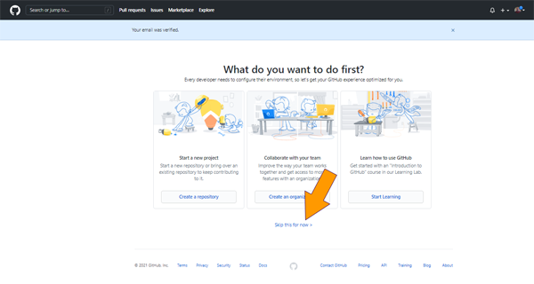

Here’s a quick and dirty tutorial on how to set up a personal page on GitHub...nothing too fancy.
For the purpose of this tutorial, we’ll assume that you don’t already have an account and that you’re are familiar with creating basic web content.
For more information on what GitHub is and the start of what you can do, try: https://guides.github.com/activities/hello-world/.
We’ll cover the following steps:
Navigate to GitHub.com and click on the Sign-up link

Enter the email address that you’d like to associate with your GitHub account.
Enter a password for your account
Update your username to the username of your choice… assuming it’s available.
Follow the prompt to select whether or not you’d like to receive update and announcement e-mails.
You’ll be presented with a section to verify you’re human for the account.
Click Start Puzzle to verify that you are indeed a living breathing person
When you’ve completed the steps for the verification, you will be able to click Create account.
Once your email has been verified, you’ll be presented with a few options to get started, we will skip this for now.
To create our personal web page, we’ll choose create repository from the menu on the left, or choose the drop…
Choose a name for your repository that will ALSO serve later as the site name where you will browse to find your page in the format your-site.github.io. If the name is already in use, modify it until you strike gold…and GitHub tells you that your repository name is available.
In the editor of your choice, create your index.html file. You may either choose GitHub’s drag and drop interface OR you can push the html file, images, ect. From GitHub Desktop. GitHub will use this page to display your site.
Once your index file has been uploaded, you must commit the change to the repository. Think of the commit as a Save button 2.0. Not only are files uploaded but also the changes or versions are tracked.
With your content in place, you’re ready to preview your personal site.
You can type your repository name (your-site.github.io) in the browser and GitHub will serve your personal page.